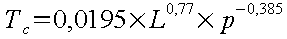
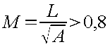
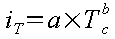

Manuel utilisateur : Les Bassins Versants
Ce module permet de calculer les débits caractéristiques d'un bassin versant rural ou urbain. Pour un bassin urbain, on calcule :
le débit d'orage,
le débit de référence,
et le débit de temps sec.
Et pour un bassin versant rural, on détermine simplement le débit d'orage.
Dans les deux paragraphes principaux qui suivent, nous prenons l'exemple d'un bassin urbain puis d'un bassin rural dont les caractéristiques principales sont communes :
Pour les données pluviométriques et la caractérisation de la loi de Montana, le projeteur doit définir une série de paramètres pour les averses de durée inférieure à un seuil et une série de paramètres pour les averses de durée supérieure au seuil.
Suivant les informations calculées (temps de concentration du BV) ou les informations saisies (durée des pluies), le jeu de paramètres adapté sera automatiquement appliqué.
L'exemple de calcul pour un bassin versant urbain qui suit correspond à l'exemple « Démo BV urbain ». Pour l'ouvrir, il faut cliquer sur ouvrir dans le menu « Bassin versant »,
ensuite sélectionner « Démo BV urbain » dans la fenêtre qui vient d'apparaître,
et bien sûr cliquer sur le bouton « OK » pour valider votre choix.
Dans le cas d'un bassin urbain, les apports d'eau pour le débit à l'exutoire ont deux origines :
l'eau pluviale,
les eaux usées (et les eaux claires parasites).
Le débit de temps sec est composé du débit des eaux usées plus le débit des eaux claires parasites.
Avant de calculer le débit de pointe des eaux usées, il faut d'abord calculer le débit moyen des eaux usées Qm.

|
Qm |
débit journalier en l/s |
|
Ceau |
rejet journalier par habitant en litre/jour/habitant |
|
Nhab |
nombre d'équivalents-habitant |
Pour l'exemple étudié ici, nous choisissons :
Et nous obtenons : Qm ≈ 2.1 l/s.
![[Attention]](chmicons/caution.png) | Attention |
|---|---|
Cette valeur n'apparaît pas dans Hydrouti, ou du moins n'apparaît pas directement. En effet, en choisissant un taux de dilution de 100% comme dans cet exemple, on a la relation Qm = Qecp (Voir paragraphe 3.2.1.1.2 - Le débit des eaux claires parasites Qecp ). Il est alors possible de voir quelle valeur prend Qm, puisque le débit des eaux claires parasites Qecp est affiché dans Hydrouti. |
Pour obtenir le débit de pointe des eaux usées, il suffit de multiplier le débit moyen Qm par un coefficient de pointe p calculé de la façon suivante :

Attention, p doit être limité à 4 : p ≤ 4
|
p |
coefficient de pointe |
|
a |
paramètre qui exprime la limite inférieure (par défaut 1,5) |
|
b |
paramètre qui exprime la valeur de croissance (par dé-faut 2,5) |
|
Qm |
débit moyen journalier des eaux usées en l/s |
Pour cet exemple, nous conservons les valeurs par défaut,
et nous obtenons ainsi : p ≈ 3.2 .
On en déduit alors Qedp ≈ 6.9 l/s :

Le débit des eaux claires parasites Qecp s'obtient à partir du débit moyen des eaux usées Qm, et du taux de dilution, qui est fixé par l'utilisateur (ici, nous avons choisi 100%).
|
Qecp |
débit des eaux claires parasites en l/s |
|
Qm |
débit moyen des eaux usées en l/s |
|
Tdilu |
taux de dilution en % |
Le débit de référence est composé du débit de temps sec calculé dans le paragraphe précédent, et du débit de pluie de référence, dont l'expression est donnée ci-dessous :
|
Cr |
le coefficient de ruissellement |
|
A |
la surface du bassin versant (en ha) |
|
Tc |
temps de concentration (en mn) |
|
I |
l'intensité de la pluie de référence (en l/ha/s) |
Hydrouti calcule le temps de concentration par la formule de Kirpich :

|
L |
la longueur caractéristique du bassin versant (en m) |
|
p |
la pente caractéristique du bassin versant (en m/m) |
Dans notre exemple, on obtient les résultats suivants :
Tc ≈ 28 mn
QpluieREF ≈ 124 l/s
On en déduit finalement le débit de référence Qréf = Qts + QpluieREF :
Le débit d'orage Qora se compose d'une première partie d'eau pluviale QpluieORA et d'une seconde partie du débit de temps sec Qts. Ce dernier a été calculé dans le paragraphe « 3.2.1.1 »« - »« Le débit de temps sec Qts ». La détermination du débit de pluie d'orage se fait par trois méthodes :
la méthode de Caquot,
la méthode rationnelle,
ou la méthode de l'hydrogramme.
L'utilisateur a ensuite le choix d'une des méthodes.
Cette méthode utilise un modèle simple de transformation de la pluie (décrite par son intensité iT), supposée uniforme et constante dans le temps, en un débit instantané maximal à l'exutoire. Celui-ci est atteint lorsque l'ensemble du bassin contribue à la formation du débit, donc lorsque la durée de l'averse est égale au temps de concentration du bassin versant.
|
QpluieORA |
débit de pointe (m3/s) |
|
C |
coefficient de ruissellement |
|
iT |
intensité de la pluie de période de retour T (mm/mn) |
|
A |
surface du bassin versant (ha) |
L'intensité de la pluie de période de retour T se calcule avec les coefficients de Montana :
Ici, on obtient : iT ≈ 0.72 mm/mn
On en déduit le débit de pluie d'orage QpluieORA par la méthode rationnelle:
Finalement, en faisant la somme du débit de temps sec Qts et du débit de pluie d'orage « par la méthode rationnelle », on obtient le débit d'orage « par la méthode rationnelle » :
Cette méthode est dérivée de la méthode rationnelle, elle s'applique exclusivement sur des surfaces drainées, et de la même façon, on ne détermine que le débit de pointe. Sa formulation est la suivante :

|
QpluieORA |
débit de pluie d'orage par la méthode de Caquot en m3/s |
|
I |
pente hydraulique en m/m |
|
C |
coefficient d'imperméabilisation |
|
A |
surface du bassin versant (ha) |
|
m |
coefficient correctif de forme |
|
K, α, β, γ |
coefficients dépendant de la pluviométrie et de la période de retour |
Les expressions de K, α, β, γ, qui dépendent de la période de retour et donc des coefficients de Montana, sont les suivantes :
Avec notre exemple, nous trouvons :
K ≈ 1.50
α ≈ 0.32
β ≈ 1.23
γ ≈ 0.77
Une correction est effectuée sur le débit par le coefficient m, qui se calcule de la manière suivante :
avec

Ici, nous obtenons : M ≈ 1.63 et m ≈ 1.14 .
Finalement, on peut en déduire le débit de pluie d'orage QpluieORA calculé par la méthode de Caquot,

ainsi que le débit d'orage Qora, a fortiori calculé par la méthode de Caquot :
Cette méthode consiste à calculer l'hydrogramme de ruissellement à partir d'une pluie de projet synthétique de type double-triangle. La première étape est la construction de cette pluie de projet, puis à partir de celle-ci, on détermine la pluie nette par le modèle de ruissellement, et finalement, par le modèle de réservoir linéaire simple, on calcule l'hydrogramme.
Pour un bassin rural, la démarche est du même type. A partir de la pluie de projet, on détermine la pluie nette par le modèle de pertes, puis on calcule l'hydrogramme avec le modèle de réservoir linéaire double.
Il faut déterminer la pluie de projet : c'est une pluie synthétique en double-triangle, dont les paramètres sont les suivants pour notre exemple (nous avons conservé les paramètres par défaut) :
Par défaut pour initialiser le calcul :
la durée intense correspond au temps de concentration, calculé par la formule de Kirpich,
a durée totale est le quadruple de la durée intense.
La hauteur intense correspond naturellement à la hauteur d'une pluie d'intensité et de durée Tc ; on obtient ici une hauteur d'environ 13mm :

Le paramètre décalage de la pointe doit être compris entre 0 et 1 : il caractérise l'emplacement du pic de pluie dans le hyétogramme. Dans le cas présent, nous avons considéré une pluie centrée : le paramètre décalage de la pointe est donc égal à 0.5.
le pas de calcul caractérise le pas de discrétisation du hyétogramme, c'est donc un paramètre de précision du calcul. Dans ce cas, la valeur par défaut, c'est à dire 5mn, a été conservée.
L'utilisateur a la possibilité de modifier, à volonté, les caractéristiques de la pluie, en changeant les valeurs des différents paramètres.
Pour les hauteurs de pluie, en effectuant un double clic dans le champ de saisie, la hauteur d'eau est automatiquement recalculée par application de la formule de Montana.
Modifications des durées totale et intense de l'affichage initial
Recalcul des hauteurs correspondante par la loi de Montana en double cliquant dans le champ « Hauteur totale » et le champ « Hauteur intense »
Dès qu'on valide les modifications, en cliquant sur le bouton « valider », les hauteurs « intense » et « totale » sont mises à jour automatiquement.
La figure suivante représente le hyétogramme obtenu :
La pluie de projet est la pluie « brute » tombant sur l'ensemble du bassin versant de façon homogène. Pour un bassin versant urbain, la pluie nette est tout simplement la part ruisselée de la pluie brute. Le coefficient de ruissellement de notre exemple est égal à 40%. Le hyétogramme de la pluie nette se déduit du hyétogramme de la pluie brute : on reprend les mêmes durées, mais on ne considère que 40% des hauteurs d'eau. Autrement dit, seule la lame d'eau précipitée sur les surfaces imperméables participe au ruissellement.
Le modèle de transformation pluie-débit est le même pour les bassins versants urbains et ruraux. C'est un modèle conceptuel : on stocke la pluie nette dans un bassin qu'on vidange au fur et à mesure, d'où le nom « modèle de réservoir linéaire ». Les deux équations régissant le fonctionnement de ce modèle sont les suivantes :
|
Une équation de stockage |
|
|
Une équation de conservation |
|
|
S(t) |
volume stocké à l'instant t sur le bassin et dans le réseau en mm |
|
Q(t) |
débit à l'exutoire du bassin à l'instant t en mm |
|
In(t) |
intensité de la pluie nette tombant à l'instant t sur le bassin en mm |
|
K |
paramètre caractéristique du bassin versant (cf. suite) |
L'équation de conservation traduit, à chaque instant, la variation du stockage qui est égale à la différence entre flux entrant et sortant.
En combinant ces deux équations, on obtient la relation suivante :
dont la solution a pour expression :
Le paramètre K de l'équation de stockage est homogène à un temps. Il traduit le décalage dans le temps des centres de gravité de la pluie (hyétogramme) et du débit (hydrogramme), c'est en quelque sorte le temps de réponse. Dans la version actuelle d'Hydrouti, ce paramètre n'est pas encore modifiable ; on impose une valeur calculée avec l'équation suivante :
|
K |
paramètre (en mn) |
|
A |
surface (en ha) |
|
I |
pente hydraulique (en %) |
|
IMP |
imperméabilisation (en %) |
|
TP |
durée de la période intense de la pluie abattue (en mn) |
|
L |
longueur hydraulique (en m) |
|
HP |
hauteur tombée durant TP (en mm) |
Le domaine de validité de cette relation est
|
Paramètres |
Borne inférieure |
Borne supérieure |
|
A |
0.4 |
5 000 ha |
|
IMP |
20 % |
100 % |
|
L |
110 m |
17 800 m |
|
I |
0.4 % |
4.7 % |
|
TP |
5 mn |
180 mn |
|
HP |
5 mm |
240 mm |
Les essais de calage du modèle sur la valeur du débit de pointe ont montré que pour reproduire cette valeur avec une meilleure précision, il convenait de réduire la valeur de K à :
|
Bassins de surface < 6 ha |
|
|
Bassins de surface < 250 ha |
|

On obtient pour notre exemple l'hydrogramme suivant
Le débit maximal d'eau pluviale QpluieORA est environ :
D'où finalement le débit d'orage Qora calculé par la méthode de l'hydrogramme :
L'exemple de calcul pour un bassin versant rural qui suit correspond à l'exemple « Démo BV rural ». Pour l'ouvrir, il faut cliquer sur ouvrir dans le menu « Bassin versant », et ensuite sélectionner « Démo BV rural » dans la fenêtre de sélection (cf « chapitre »« 3.2.1 » - Ouverture de « Démo BV urbain »).
Dans le cas d'un bassin rural, les apports d'eau pour le débit à l'exutoire ont une unique origine : l'eau pluviale.
La méthode rationnelle est applicable sur des bassins versants dont les superficies sont inférieures à quelques kilomètres carrés.
La méthode superficielle de Caquot n'est applicable qu'à des bassins versants urbanisés, dont les superficies sont inférieures à quelques dizaines d'hectares. Elle n'est donc pas conseillée pour un bassin versant rural, mais Hydrouti effectue malgré tout le calcul et laisse la possibilité à l'utilisateur de choisir cette méthode.
La pluie de projet s'obtient de la même manière que pour un bassin urbain (cf. Chapitre « 3.2.1.6.1 »« - »« Pluie de projet » ).
Elles sont constituées par :
interception de la pluie par la végétation,
et surtout par la rétention dans le sol.
Il semble que l'interception ne pèse sur les pertes initiales que si la couverture végétale est importante. La rétention du sol prend la part la plus importante en général : les valeurs habituellement considérées varient environ entre 0.2 mm et 15 mm. (Voir exemples au chapitre « 2.2.4.1.4 »« - »« Estimation des pertes initiales »« »).
La vitesse d'infiltration diminue au cours du temps, pour atteindre une valeur constante minimale. La loi de Horton (voir chapitre « 2.2.4.1.5 »« - »« Estimation des pertes continues » )modélise ce phénomène, avec la fonction en exponentielle suivante :

|
f(t) |
vitesse d'infiltration au temps t en (mm/h) |
|
fc |
vitesse limite d'infiltration (en mm/h) |
|
a et b |
paramètres de la loi de Horton |
fc caractérise la perméabilité du sol qui compose le bassin versant. On a par exemple relevé, pour des terrains nus, les ordres de grandeurs suivants:
Terre sableuse : fc = 15 à 25 mm/h.
Terre lourde : fc = 3 à 5 mm/h.
Terre argileuse : fc = 1 à 3 mm/h.
Si fc est une caractéristique du bassin, a est variable et dépend de l'état de saturation du sol au début de l'averse, et donc des conditions pluviométriques antérieures. Il sera moindre si le sol est déjà humide.
Ce paramètre représente en fait la vitesse d'infiltration initiale f0 :

On a observé des valeurs de f0 comprises entre 20 et 100 mm/h pour des sols secs. L'estimation de a doit tenir compte du fait que si la vitesse d'infiltration fc augmente :
si la rétention de surface augmente alors f0 augmente,
le taux de saturation augmente.
Le paramètre b représente la rapidité d'évolution de la courbe d'infiltration entre les valeurs f0 et fc. Ce coefficient est d'autant plus petit que la surface du sol est plus favorable à l'infiltration (rétention de surface importante, terrain meuble, …).
Un élément d'appréciation important est la durée Ts au bout de laquelle un sol atteint la saturation dans des conditions moyennes d'humidité initiale, sous de fortes averses continues. Cette durée est de 12 à 24 heures dans les régions à forte pluviométrie comme le sud de la France. Elle peut atteindre 2 à 3 jours dans d'autres régions et pour certains sols très perméables.
Le temps de réponse est caractéristique du bassin versant : il peut varier de quelques minutes (un débit généré quasi-instantanément) à plusieurs dizaines d'heures. Sa détermination est très délicate, dans le sens où la valeur du débit généré est très sensible par rapport à ce temps de réponse.
Le modèle est quasiment le même que pour un bassin versant urbain (cf. chapitre « 3.2.1.6.3 »« - »« Modèle du réservoir linéaire simple » ). Dans ce cas, c'est en fait un modèle à « double » réservoirs linéaires : on met en série deux modèles à réservoir linéaire simple.
| Note | |
|---|---|
Pour l'ensemble des paramètres utilisés dans le modèle, il est très important de relever un maximum de « données de terrain » (y compris se renseigner auprès des habitants de la localité sur les états et évolutions passés du bassin versant) afin d'éviter toute erreur grossière. L'utilisation de données « standard » issues de la littérature, sans aucune visite du site est à proscrire. |
Pour une approche la démarche suivante peut être appliquée :
L'utilisateur précise les caractéristiques principales (Surface, longueur, pente et coefficient de ruissellement)
Il choisi une série de valeurs pour les pertes initiales et continues et le temps de réponse
A partir des résultats donnés par HYDROUTI, l'utilisateur peut comparer le résultat de la méthode de l'hydrogramme avec celui de la méthode rationnelle et ajuster les paramètres afin d'obtenir une concordance.
Résultats avant ajustement :
Le débit de l'hydrogramme est plus faible que celui de la méthode rationnelle alors que le coefficient de ruissellement est supérieur. Il faut modifier la loi d'infiltration et le temps de réponse.
Résultats après ajustement :
On obtient, pour notre exemple l'hydrogramme suivant :